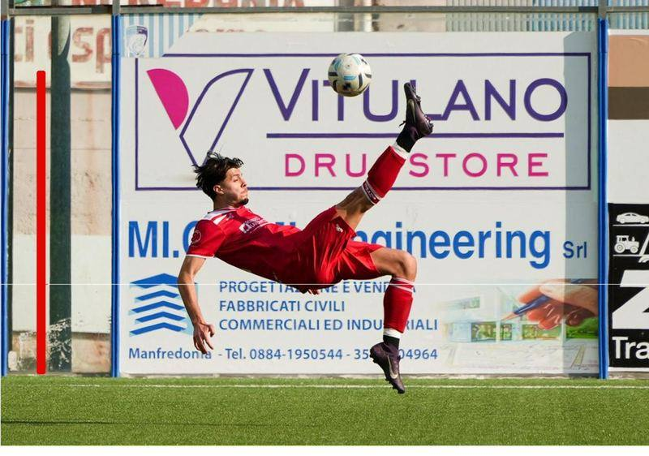

IDEALE BARI CALCIO
T'IMMAGINI
Un gruppo unico, un calcio diverso, delle emozioni indescrivibili. Questa raccolta segue l’Ideale Bari partita dopo partita: ogni capitolo racconta una giornata a sé, e cresce ogni volta che c’è una nuova gara da raccontare.
ClienteIdeale Bari Calcio
FormatoDiario di stagione
ServiziPhoto, Video, Social
StatoIn aggiornamento
01 — Bisceglie, 10 maggio 2026
IDEALE BARI — TRIGGIANO
Un gruppo unico, un calcio diverso, delle emozioni indescrivibili: tra tutte le squadre scattate sul rettangolo verde, quelle vissute con l’Ideale Bari restano uniche. Il traguardo raggiunto ancora di più, perché le favole esistono, basta crederci.
Il goal vittoria di Bovio in Ideale Bari — Triggiano | Bisceglie, 10 maggio 2026
La raccolta è aperta: ogni nuova partita raccontata diventa un capitolo in fondo a questa pagina.